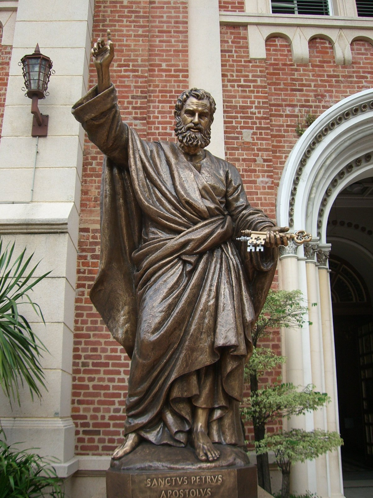

Еще одна прогулка по Бангкоку: Старые европейские кварталы
Опубликовано: 6 февр. 2010
Надеюсь вслед за фильмами "Париж, я тебя люблю" и "Нью-Йорк, я тебя люблю" снимут и фильм "Бангкок, я тебя люблю". Потому что я люблю этот город, люблю его жару, шум, запахи, людскую толчею...
Ну а пока фильм не сняли, разрешите пригласить на еще одну прогулку по Бангкоку, подсказанную все тем же G. Byrne Bracken’ом.
Прогулка называется "Старые европейские кварталы" и проходит вдоль дороги Charoen Krung, как утверждается, первой вымощенной дороги Таиланда. Что впрочем и неудивительно, поскольку она вела от европейский кварталов, куда европейцы перибывали и селились, к королевскому дворцу.
G. Byrne Bracken почему то советует начать прогулку от станции BTS Saphan Taksin, но я начну ее 200-метрами южнее от храма Ват Ян Нава.
[attachment=9637:walk.JPG]
Маршрут прогулки показан на картинке. Начинаем с самой нижней точки и движемся вверх, сворачивая к реке на многочисленные сои
Wat Yan Nawa (วัดยานนาวา) или Храм китайской джонки
Его история
Собственно джонка
Viharn изнутри
Внутри огромное количество артефактов названых "Relics of Shakyamuni", то есть частей тела Будды (мозг, сердце, различные кости), но какой какой то вредный таец тут же начал мне показывать, что снимать нельзя и вышеприведенный снимок - единственный который я успел сделать.
Выходим на улицу
и проходим рынок Bang Rak
Продолжение следует...
Опубликовано: 6 февр. 2010
Идем дальше и свернув налево на Сои 42 обнаруживаем маленький, но очень красивый храм Wat Suan Phu.
Храм примечателен резными орнаментами
"Небоскребы, небоскребы, а я маленький такой"
Идем дальше по Charoen Krung.
Совет мужчинам - не ходите туда с женщинами, неравнодушными к "брюликам" ;-)
Сворачиваем на Сои 40 и идем к реке. Здесь собственно и начинаются следы европейского присутствия.
Assumption Cathedral
Нас приветсвуют

Внутри идет католическое бракосочетание - но в тайском стиле
Выходим обратно на Сои 40. Еще один образчик европейской архитектуры - здание East Asiatic Company.
Возле реки находится отель Mandarin Oriental - один из лучших отелей Бангкока, но с виду ничего примечательного
В комплекс отеля входит ресторан The China House. Как я понимаю, именно его имеют обыкновение посещать "дорогие, пафосные и высокомерные" персонажи ;-). Я со своей хохляцкой рожей зайти внутрь постеснялся ;-)
Продолжение следует...
Опубликовано: 7 февр. 2010
Не выходя обратно на Charoen Krung, проследуем на север маленькой улочкой, которая тянется параллельно реке.
В конце улочки нас ожидает французское посольство, которое является самым старым после португальского консульства зданием в Бангкоке. Увы, я совершаю прогулку в неудачный день - субботу, поэтому посольство закрыто и мне приходится довольствоваться осмотром ворот и примыкающих развалин.
За французским посольством сворачиваем налево и идем к реке.
Удивительно но в этом здании живут люди
По переходам над головой бегают собаки
И выходя к реке обнаруживаем здание старой таможни.
История здания описана здесь
В кратком пересказе она звучит так. "Здание было построенр 1890 году, в годы правления Рамы 5, для того чтобы собирать налог на импорт с приплывающих торговых кораблей. Здание было спроектировано итальянским инженером Красси и на момент постройки было самым современным зданием Бангкока. В 1954 сбор наога был перенесен на территорию Port Authority of Thailand и здание стало выполнять функцию штаба пожарной охраны."